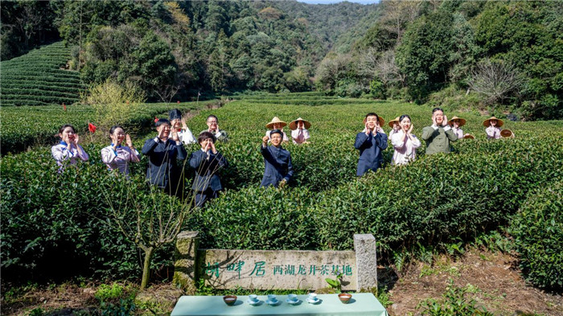
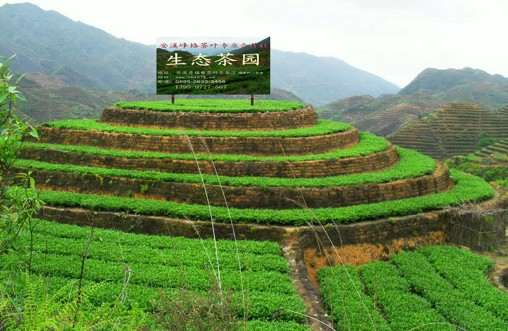
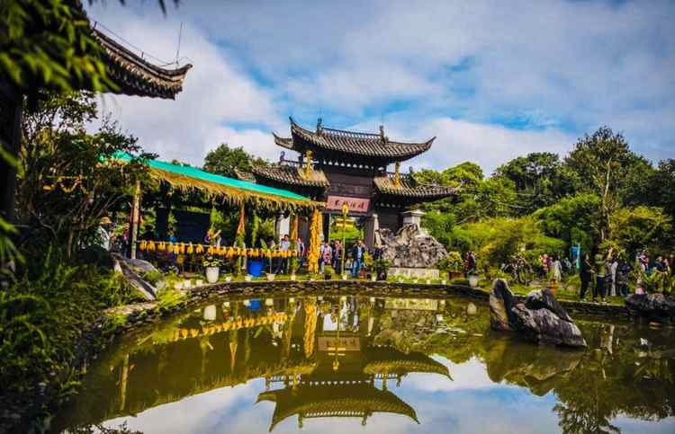
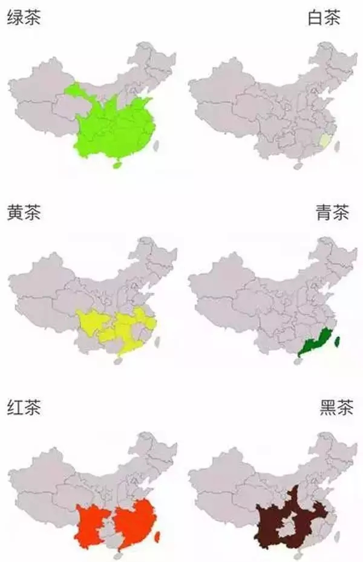

名茶产地
好山好水出好茶，探索中国名茶的故乡
中国幅员辽阔，气候多样，不同的地理环境孕育出各具特色的名茶。从江南水乡到云贵高原，从东南沿海到巴山蜀水，每一片茶叶都承载着当地的自然禀赋和文化底蕴。

浙江西湖
龙井茶故乡
西湖周边地区，特别是狮峰、龙井、云栖、虎跑、梅家坞等地，气候温和，雨量充沛，土壤肥沃，是龙井茶的最佳产地。
- 代表茶：西湖龙井
- 特点：色翠、香郁、味醇、形美
- 采摘时间：清明前后

福建安溪
铁观音发源地
安溪县地处戴云山脉，气候温暖湿润，红壤酸性适中，非常适合茶树生长，是乌龙茶的重要产区。
- 代表茶：安溪铁观音
- 特点：香气浓郁，回甘明显
- 制作工艺：半发酵

云南普洱
普洱茶原产地
普洱地区地处云贵高原，气候独特，有大面积的古茶树资源，是普洱茶的核心产区。
- 代表茶：普洱茶
- 特点：陈香醇厚，越陈越香
- 茶树类型：大叶种
安徽黄山
黄山毛峰产地
黄山地区山高林密，云雾缭绕，土壤富含有机质，为茶树生长提供了得天独厚的条件。
- 代表茶：黄山毛峰
- 特点：白毫显露，香气清高
- 品质特征：形似雀舌，匀齐壮实
中国名茶分布图

图例说明
- 绿茶产区
- 红茶产区
- 黄茶产区
- 黑茶产区